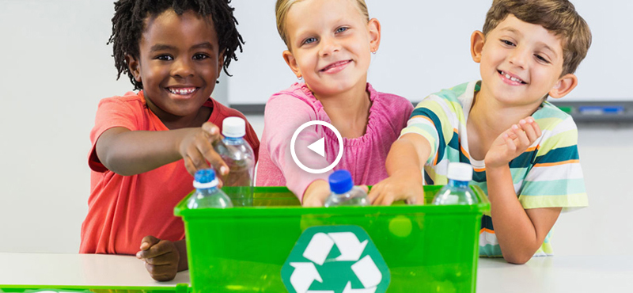

מיחזור

אחד ההיבטים המשמעותיים של המהפכה האקולוגית, לה כולנו עדים בשנים האחרונות, הוא הגברת היקפי המיחזור. דומה כי בישראל השינוי משמעותי במיוחד: היקפי המיחזור בישראל הם חסרי תקדים, עם למעלה מרבע מהפסולת שממוחזרת בפועל, והיא נמצאת במקומות גבוהים מאד ברשימת המדינות האקולוגיות, מהבחינה הזו. מה אפשר למחזר? איך זה מתבצע? והאם לתהליך יש חסרונות?
ראשית: מהו מיחזור?
בהגדרה הפשוטה ביותר, מיחזור הוא הליך שבמסגרתו מפרקים פסולת מסוג מסוים (כפי שנראה בהמשך), עד לרמת חומרי הגלם שלה. המטרה היא
שחומרים אלה ישמשו לייצורם של המוצרים החדשים, מה שימנע, כמובן, בזבוז יקר של משאבים חדשים, שעלות הפקת מוצרים
באמצעותם גבוהה פי כמה. היתרונות של המיחזור, לכן, מרובים בכל קנה מידה.
הזכרנו כבר את הקטנת
עלויות הייצור, ולכך הוספנו גם את החיסכון בחומרי גלם. המיחזור מאפשר גם לצמצם באופן ניכר את כמויות הפסולת,
מה שמקטין את הסיכוי לפגיעה בתשתיות (למשל, חדירה למי תהום), ואף את הסבירות למחלות שונות שיתפתחו אצל האדם עקב
אותה חשיפה לפסולת מזהמת.
סוגים מגוונים של מיחזור
- מיחזור נייר – ההליך מבוסס על ריסור הנייר הישן במים, מה שיוצר עיסה נוזלית, לאחר ייבושה, אפשר לקלף מן הרשת שכבת נייר, שתשמש לצורך המיחזור. יש לציין כי צעד שכזה מוריד את איכות הנייר, מה שמביא לכך שהשימוש במיחזור נייר הוא לצרכים אחרים, שאינם קשורים להשבתו לצורה זו (למשל, הפיכת החומר הממוחזר למשטח כתיבה).
- מיחזור פלסטיק – צורה נפוצה מאד של מיחזור, שבאה לידי ביטוי באינספור מיכלי איסוף בקבוקים ופלסטיק, הפזורים בכל עיר ורשות מקומית בישראל. כאן, יש מספר שיטות עיקריות, הנבדלות ביניהן בהתאם למאפייני הפלסטיק הספציפיים: בכל המקרים, עם זאת, יבוסס התהליך על שטיפת, גריסת ועיבוד מוצרי הפלסטיק לצורי של פתיתים, וייצר מוצרים שונים באמצעותם.
- מיחזור מוצרי אלקטרוניקה – מבוצע במגוון שיטות, מכניות ותעשייתיות כאחד. הנפוצה היא שיטת ההנדסה ההפוכה, המביאה להפרדה ידנית של רכיבים אלקטרוניים שניתן למחזר, והפרדה שלהם לחומרי היסוד, לצורך שימוש חוזר.
- מיחזור פסולת בניין – כתוצאה מכך שאחוז ניכר מהפסולת בעולם מוגדר כפסולת בניין, לא מפתיעים המאמצים למיחזור מהסוג הזה. הוא נעשה בעיקר במטמנות או באתרי השינוע, כשהתהליך המורכב כולל הפרדת, גריסת, ניפוי וסינון הפסולת, לרוב ליצירת חומרים בצורת גרגירים, בהם נעשה שימוש רב עבור בניית מבנים וסלילת כבישים.
- מיחזור מים – מיחזור מי שופכין, כך שישמשו להשקיה, או התבססות על מים אפורים, בהם ניתן להשתמש כמי מקלחת, שטיפה, כביסה ועוד.
הצד השלילי של המיחזור
הצורך במיחזור, אם כן, מקיף את כולנו, ולא ניתן שלא לברך את המאמצים ההולכים וגוברים בישראל להפוך את המיחזור למקובל
יותר: הן בצורה של הצבת מיכלי מיחזור מסוגים שונים במקומות רבים בישראל, באמצעות ענישה של "עבריינים" סדרתיים
(בעיקר בכל הנוגע לפסולת בניין) ובצורה של לא מעט קמפיינים, שנועדו להגביר את המודעות לנושא עוד יותר.
ועדיין,
חשוב להזכיר שלמיחזור יש כיום מספר מגבלות, שראוי לתת עליהן את הדעת. הליך המיחזור מצריך עלויות כספיות גבוהות,
שאינן אפשריות תמיד: הוא מביא לביזבוז מסוים של אנרגיה ומשאבים, ולכן עלול גם לפגוע בסביבה, באופן אחר. בנוסף
על כך, בחלק מהמקרים מתלוננים התעשיינים על כך שהחומרים הממוחזרים כוללים בתוכם אי אילו פגמים, שעלולים להיות
מגולמים גם במוצרים הסופיים, שיופקו בתוך תהליך המיחזור.